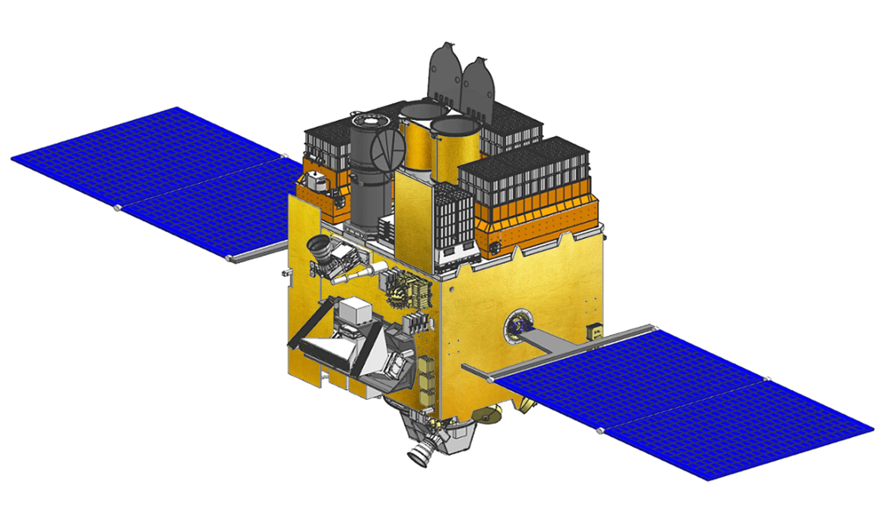

India's own space telescope — studying black holes, neutron stars, and galaxies simultaneously across X-ray and ultraviolet wavelengths that ground-based telescopes can never see. AstroSat has been India's eye on the violent, energetic universe for over a decade.
Watch: AstroSat MissionAstroSat — launched on September 28, 2015 — is India's first dedicated multi-wavelength space observatory. Unlike most telescopes that observe in a single wavelength, AstroSat simultaneously observes celestial objects in visible light, ultraviolet, soft X-ray, and hard X-ray — giving astronomers a complete, multi-energy picture of the most energetic phenomena in the universe.
Placed in a 650 km equatorial orbit, AstroSat studies black hole accretion, neutron star spin, pulsar timing, active galactic nuclei, and star-forming galaxies. It has produced over 800 peer-reviewed scientific publications and provided data to researchers in over 20 countries through ISRO's open data policy.
AstroSat's unique capability to observe simultaneously in multiple wavelengths — something Hubble cannot do — makes it scientifically complementary to every other space telescope in operation. India didn't build a copy of Hubble. India built something different and irreplaceable.
AstroSat has positioned India as a serious player in global astrophysics research. Its open data policy means scientists worldwide — from Harvard to ESA to JAXA — use AstroSat data in their research. India built an instrument that the global scientific community depends on.
The 800+ publications from AstroSat data represent India's most significant contribution to fundamental physics and astronomy. This is science for its own sake — understanding the universe — and India is doing it at the highest level.